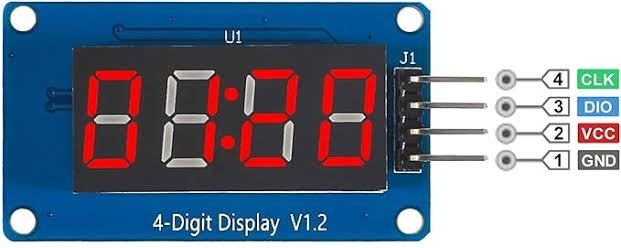
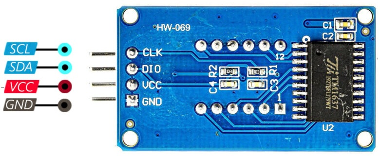

👾 LED 4-Digit Display com TM1637 🚏¶

O TM1637 é um controlador LED serial de alta eficiência, integrado a um módulo de display de 4 dígitos 7-segmentos, amplamente utilizado em projetos de IoT, clocks digitais, termômetros e contadores.
O LED 4-Digit Display com TM1637 é um módulo e visualização de dados extremamente popular em projetos IoT e Arduino. Este dispositivo combina quatro dígitos de 7 segmentos (totalizando 28 segmentos individuais) com o controlador TM1637, um circuito integrado especializado que gerencia toda a complexidade de uma exibição tradicional usando apenas dois pinos de comunicação.
{kind=link}
Este display pode ser utilizado para exibir grandezas como temperatura, umidade, velocidade, contagem de eventos e tempo com uma clareza e vivacidade impressionantes graças aos LEDs de alta intensidade em cores variadas (vermelho, azul, verde). Diferentemente de um display tradicional de 7 segmentos que exigiria 12 ou mais conexões, o TM1637 reduz drasticamente essa necessidade, tornando o projeto mais compacto e elegante.
Este display opera entre 3.3V e 5.5V, comunica-se via protocolo bidirecional em apenas dois pinos, e gerencia automaticamente o refresh da exibição após cada atualização de dados.
📢 Importância e Papel em Projetos IoT ✒️
Em sistemas de automação residencial inteligente, o TM1637 exibe informações críticas em tempo real: temperatura ambiente, umidade relativa do ar, nível de luminosidade ou até mesmo alertas de segurança.
Na agricultura inteligente, ele monitora variáveis como solo umidade, temperatura da estufa e pH da água de irrigação. Em monitoramento ambiental, contribui para estações meteorológicas amadores mostrando dados coletados via sensores DHT11, BMP280 e LDR.
A utilidade prática é imediata: qualquer entusiasta de Arduino consegue construir um relógio digital, um cronômetro, um contador de pessoas em ambientes, um termômetro WiFi conectado à nuvem, ou até mesmo uma placa de placar para competições. O display oferece feedback visual instantâneo, fundamental para validar o funcionamento do código durante o desenvolvimento.
📢 Nível de Dificuldade ✒️
- Iniciante a Intermediário — A conexão é trivial (apenas 4 fios), a programação requer apenas uma biblioteca bem documentada, e a curva de aprendizado é suave. Mesmo assim, compreender o protocolo de comunicação I2C-like e lidar com possíveis problemas de hardware (como capacitores defeituosos) posiciona o projeto em nível intermediário para iniciantes determinados.
1️⃣ Visão Geral e Especificações do Sensor¶
O TM1637 é um circuito integrado produtor de LED (Light Emitting Diode driver) com interface de teclado integrada, fabricado pela Titan MicroElectronics. Internamente, ele contém um decodificador de 7 segmentos, latches de dados, drivers de alta corrente para LEDs e lógica de controle de brilho.
💾 Princípio de Funcionamento:
O TM1637 utiliza uma técnica chamada multiplexação dinâmica para controlar os quatro dígitos. Em vez de alimentar todos os segmentos continuamente, o chip alterna rapidamente entre os dígitos (tipicamente a uma taxa de 1 kHz ou superior), acendendo apenas os segmentos necessários para cada dígito por um breve período. Para o olho humano, isso cria a ilusão de todos os segmentos estarem acesos simultaneamente, mas na verdade consome muito menos energia.
O microcontrolador (Arduino, ESP32, etc.) envia dados ao TM1637 através de um protocolo serial similar ao I2C, mas não totalmente compatível. A comunicação ocorre por dois pinos:
- CLK (Clock): Fornece o sinal de sincronização
- DIO (Data Input/Output): Carrega os comandos e dados
O protocolo é bidirecional, ou seja o Arduino envia comandos para ligar/desligar segmentos, ajustar brilho e controlar o display, enquanto o TM1637 pode teoricamente enviar dados de volta (por exemplo, status de botões, se implementados).
💾 Tipo de Sinal Enviado ao Arduino:
O TM1637 usa sinais digitais de dois níveis (HIGH/LOW), correspondentes a 5V (ou 3.3V, dependendo da tensão de operação). Não há saída analógica. A comunicação é 100% digital, baseada em bits seriais transmitidos em sequência.
🔖 Vantagens¶
- Simplicidade na fiação: Apenas 2 pinos de controle + 2 de alimentação (total 4)
- Compatibilidade versátil: Funciona com qualquer microcontrolador que ofereça pinos GPIO (Arduino, ESP8266, ESP32, STM32, Raspberry Pi Pico, etc.)
- Baixo consumo de energia: Multiplexação eficiente; consumo máximo ~80 mA com todos os segmentos acesos
- Brilho ajustável: 8 níveis de brilho controláveis via software
- Gerenciamento automático de refresh: Após o envio dos dados, o chip se encarrega de manter a exibição atualizada, liberando o microcontrolador para outras tarefas
- Custo reduzido: Módulos prontos custam entre R$ 10-20 em fornecedores brasileiros
- Compatibilidade de tensão: Opera em 3.3V (ESP32) e 5V (Arduino UNO), com proteção contra polaridade invertida
🔖 Limitações¶
- Precisão de visualização limitada: Apenas 4 dígitos; números maiores ou displays de valores fracionários requerem lógica de código
- Responsividade limitada: Embora rápido, o protocolo serial tem latência mínima mas não é instantâneo
- Sensibilidade ao ruído: Capacitores incorretos ou conexões compridas podem causar erros de comunicação
- Sem suporte a caracteres especiais: Apenas números 0-9, alguns caracteres de letra (A-F) podem ser exibidos manualmente, não há suporte nativo para letras como "Q" ou "Z"
- Faixa de operação limitada: Temperatura de funcionamento entre -20°C e 70°C
- Sem funcionalidade de entrada (teclado): Embora o chip suporte entrada de teclado, os módulos comerciais geralmente não expõem essa funcionalidade
🔖 Especificações Técnicas¶
| Parâmetro | Valor | Descrição |
|---|---|---|
| Tensão de Operação (VCC) | 3.3V – 5.5V DC | Compatível com Arduino (5V) e ESP32 (3.3V) |
| Corrente Típica | 20-50 mA | Depende da quantidade de segmentos acesos |
| Corrente Máxima | ~80 mA | Com todos os segmentos acesos no máximo brilho |
| Faixa de Medição | N/A (Display, não sensor) | Exibe valores 0000 a 9999 (4 dígitos) |
| Precisão / Resolução | 1 dígito = 1 unidade | Sem casas decimais nativamente; implementar via software |
| Tipo de Saída | Digital serial (I2C-like) | Protocolo bidirecional em CLK e DIO |
| Tipo de Entrada | Digital serial (I2C-like) | CLK e DIO são bidireccionais |
| Tempo de Resposta | <10 ms | Tempo para atualizar o display após comando |
| Taxa de Refresh | ~1-2 kHz (multiplexação) | Invisível ao olho humano |
| Níveis de Brilho | 8 níveis ajustáveis | Via comando de software (0 = mínimo, 7 = máximo) |
| Dimensões do Display | 42 mm × 24 mm × 11 mm | Altura dos dígitos: ~9.14 mm (0.36 polegadas) |
| Dimensões do Módulo | 42 mm × 24 mm × 11 mm | Inclui PCB e componentes |
| Peso | ~7-10 gramas | Muito leve |
| Cor do Display | Vermelho, Azul ou Verde | Disponível em variantes; mais comum é vermelho |
| Proteção contra Polaridade | Sim | Inverte o circuito sem danificar, mas não funciona |
| Temperatura de Operação | -20°C a +70°C | Funciona em ambiente frio e quente |
| Temperatura de Armazenamento | -30°C a +80°C | Para storage, não operação |
| Chip Driver | TM1637 | Fabricante: Titan MicroElectronics |
| Protocolo | I2C-like serial | Não compatível com I2C padrão |
🧰 Como Esses Parâmetros Afetam o Uso com Arduino:
A tensão de 3.3V-5.5V permite conectar diretamente ao Arduino UNO (5V), Arduino Nano (5V) e ESP32 (3.3V) sem reguladores adicionais.
A corrente de 80 mA máxima é segura para os pinos de saída do Arduino (máximo recomendado é 200 mA por pino), mas em projetos com múltiplos displays, recomenda-se alimentação externa.
A comunicação serial utiliza qualquer par de pinos digitais via software emulation, oferecendo flexibilidade total. O tempo de resposta <10 ms é praticamente imperceptível, adequado para interfaces de usuário responsivas. Os 8 níveis de brilho permitem economizar bateria em projetos portáteis reduzindo a intensidade. As dimensões compactas facilitam integração em enclosures pequenos.
2️⃣ Hardware: Conexão com o Arduino¶
🛰️ Materiais Necessários¶
Lista de componentes 🧰
Para um projeto básico de display com TM1637, você precisará de:
- 1x Módulo Display TM1637 (4 dígitos 7-segmentos)
- 1x Placa Arduino (UNO, Nano, Mega, ou ESP32)
- 1x Protoboard (breadboard) ou PCB para prototipagem
- 4x Jumper Wires (fios dupont macho-macho) para conectar o display
- Fio de Aterramento (GND) compartilhado entre Arduino e display (essencial!)
- Fonte de Alimentação:
- Para Arduino: Cabo USB do computador, ou fonte 5V/2A externa
- Para display: Energia fornecida pelo Arduino (via pinos 5V e GND) ou fonte externa se múltiplos displays
Componentes Adicionais Opcionais 🧰
- Resistores de Pull-up 4.7kΩ (2x): Recomendados em ligações longas ou com ruído ambiental, conectados entre CLK-VCC e DIO-VCC
- Capacitor de Desacoplamento 100nF (1x): Conectado entre VCC e GND do display para filtrar ruído de alta frequência
- Resistor de Proteção 330Ω (opcional): Se alimentar o display de um pino de saída do Arduino em vez de 5V direto
- Sensor DHT11/DHT22 (opcional): Para um projeto de termômetro com display
- Sensor de Temperatura DS18B20 (opcional): Alternativa ao DHT11
- Chave de Botão (opcional): Para interfaces interativas (seleção de modo, reset, etc.)
Kit Básico para Iniciantes (Sugestão) 🧰
Se você está começando, procure kits pré-montados que incluem: - Arduino Uno ou Nano - Display TM1637 - Sensores comuns (DHT11, LDR, sensor de som) - Jumper wires, protoboard, LEDs, resistores variados - Cable USB para programação
🛰️ Esquema de Ligação (Circuito)¶
|  
{kind=link}
{kind=link}
Tabela de Pinagem 🧰
| Pino do TM1637 | Função | Pino do Arduino | Tipo de Sinal | Observações |
|---|---|---|---|---|
| CLK | Clock (Entrada) | D2 (Configurável) | Digital Input | Pode usar qualquer pino digital |
| DIO | Data I/O (Bidirecional) | D3 (Configurável) | Digital I/O | Pode usar qualquer pino digital |
| VCC | Alimentação Positiva | +5V ou +3.3V | Power Supply | Respeitar tensão nominal do Arduino |
| GND | Terra / Referência | GND | Ground | CRÍTICO: Deve estar conectado! |
Esquema Detalhado de Ligação 🧰
Display TM1637 Arduino UNO
----------------- -----------
CLK ----+---------> D2 (ou outro pino configurável)
|
[10k Ω resistor de pull-up, opcional]
|
DIO ----+---------> D3 (ou outro pino configurável)
|
[10k Ω resistor de pull-up, opcional]
|
VCC ----+---------> +5V
|
[100nF capacitor para GND, opcional]
|
GND ----+---------> GND (IMPORTANTE!)
Descrição Detalhada do Circuito 🧰
-
Pino
CLK: Conecta-se a qualquer pino digital do Arduino (D2 no exemplo, mas pode ser D4, D5, etc.). Este pino envia o sinal de sincronização. Alguns módulos deficientes podem beneficiar de um resistor de pull-up 10kΩ entre CLK e VCC para melhorar a estabilidade da comunicação. -
Pino
DIO: Conecta-se a outro pino digital do Arduino (D3 no exemplo). Este é um pino bidirecional, usado tanto para enviar dados quanto potencialmente receber feedback. Como CLK, um resistor de pull-up 10kΩ entre DIO e VCC pode melhorar a robustez em ambientes ruidosos ou com ligações longas. -
Pino
VCC: Alimentação positiva. Conecta-se ao +5V do Arduino se estiver usando Arduino UNO/Nano, ou +3.3V se usando ESP32. O módulo tem proteção contra polaridade invertida, mas não funciona se invertido. -
Pino
GND: O mais crítico. DEVE estar conectado ao GND do Arduino. É a referência comum para toda a comunicação. Sem essa ligação, o protocolo serial não consegue estabelecer níveis lógicos válidos.
Observações Importantes sobre a Montagem 🧰
- Cabos curtos: Mantenha os fios entre Arduino e display o mais curto possível (idealmente <20 cm) para reduzir ruído capacitivo.
- Resistores de Pull-up: O módulo TM1637 já possui resistores de pull-up internos (tipicamente 10kΩ), então resistores adicionais geralmente não são necessários a menos que:
- Os cabos sejam muito longos (>50 cm)
- Haja muito ruído eletromagnético próximo
- O módulo específico tenha capacitores inadequados (ver troubleshooting)
- Capacitor de Desacoplamento: Um capacitor 100nF entre VCC e GND no display reduz significativamente o ruído high-frequency. Este é altamente recomendado, especialmente se alimentar múltiplos displays.
- Aterramento Comum: Todos os componentes DEVEM compartilhar o mesmo GND. Nunca deixe o display e o Arduino com referências GND diferentes.
- Proteção de Alimentação: Se utilizar fonte externa para o display (recomendado para múltiplos módulos), certifique-se de que ambas as fontes (Arduino e display) compartilham o mesmo GND para manter a integridade do protocolo serial.
Observações de Segurança 🧰
- Nunca toque em pinos do Arduino enquanto conectado à alimentação
- Não force os jumper; eles devem encaixar suavemente
- Se o módulo ficar muito quente durante operação, verifique se não há curto-circuito
- Não coloque o protoboard onde possa sofrer vibração ou queda
- Mantenha o Arduino e display longe de fontes de água ou umidade excessiva
4️⃣ Aplicações Práticas¶
O TM1637 é incrivelmente versátil. Aqui estão 8 ideias de projetos práticos que você pode construir:
-
🔖 Termômetro Digital com Sensor DHT11
- Um clássico entre iniciantes. O display mostra temperatura em tempo real (ex: 23°C) capturada por um sensor DHT11. A DHT11 fornece leituras a cada ~2 segundos. Você pode expandir para mostrar alternadamente temperatura e umidade pressionando um botão. Integração avançada: enviar os dados via WiFi (ESP32) para um dashboard na nuvem via MQTT, monitorando a temperatura histórica da sua casa.
-
🔖 Relógio Digital com Sincronização NTP
- Construa um relógio que exibe horas e minutos (ex: 14:35). Em Arduino com módulo RTC (DS3231), o relógio mantém a hora mesmo desligado. Com ESP32 + WiFi, sincronize a hora automaticamente com servidores NTP na internet, garantindo precisão. Adicione alarmes que soem quando a hora atingir um valor específico.
-
🔖 Contador de Pessoas com Sensor Infravermelho
- Use um sensor infravermelho (IR) para detectar movimento. Cada pessoa que passa incrementa um contador exibido no display. Útil para contar visitantes de um evento, fluxo em portas de lojas, ou frequência em ambientes. Variação avançada: integre com IoT para monitoramento remoto de ocupação em tempo real.
-
🔖 Cronômetro / Timer
- Um contador decrescente ou crescente. Pressione um botão para iniciar, outro para pausar, e um terceiro para reset. Perfeito para treinos esportivos, cozinha (timer de alimentos), ou jogos. Com ESP32, transmita tempos registrados para análise em nuvem.
-
🔖 Estação Meteorológica Inteligente
- Combine múltiplos sensores: DHT11/DHT22 (temperatura e umidade), BMP280 (pressão), LDR (luminosidade). Cicle entre exibições: 1º tela mostra temperatura, 2ª tela mostra umidade, 3ª mostra pressão. Com ESP32 + MQTT, publique dados para um broker (HiveMQ, Mosquitto) e visualize em plataformas como Node-RED ou Grafana. Perfeito para agricultura inteligente ou monitoramento de estufas.
-
🔖 Medidor de Velocidade / RPM
- Use um sensor óptico (LDR + LED IR) ou magnético (Hall effect) para detectar rotações. Calcule RPM (rotações por minuto) e exiba no display. Aplicações: medir velocidade de ventiladores, motores, ou até mesmo bicicletas estacionárias. Com IoT, monitore performance de motores remotamente.
-
🔖 Monitor de Consumo de Energia
- Com um sensor de corrente (ACS712), meça o consumo instantâneo em Watts e exiba. Integre com IoT para alertas automáticos se o consumo exceder um limite (ex: indicativo de vazamento elétrico ou aparelho quebrado). Envie dados para nuvem para análise histórica de padrões de consumo.
-
🔖 Alarme com Sensor de Gás / Fumaça
- Um sensor MQ-2 ou MQ-5 detecta gás ou fumaça. Se detectado, o display exibe "ALRT" ou um código de alarme. Acione um buzzer piezoelétrico e envie notificação push via ESP32 para celular dos moradores. Sistema de alerta residencial de baixo custo.
-
🔖 Estação de Trabalho com Indicador de Umidade e Temperatura para Conforto
- Baseado no sensor DHT11, o display mostra a temperatura atual. Sistema de recomendação: se muito quente (>28°C), ligue um ventilador automaticamente. Se muito frio (<18°C), ligue um aquecedor. Display oferece feedback contínuo. Com IoT, registre padrões de clima para otimizar horários de uso de aparelhos.
-
🔖 Placar Eletrônico para Jogos/Competições
- Dois displays TM1637 (ou um único com lógica de seleção): um mostra pontos do time A, outro do time B. Botões incrementam / decrementam pontos. Perfeito para competições de dardos, sinuca, ou qualquer jogo. Com IoT, transmita marcadores ao vivo para uma plataforma de streaming ou painel de exibição remoto.
⚠️ Padrão de Integração Avançada com IoT: ✒️
Para qualquer um dos projetos acima, a arquitetura IoT típica é:
Arduino / ESP32
↓ (dados em JSON via WiFi)
MQTT Broker (ex: HiveMQ Cloud, Mosquitto)
↓ (subscrito ao tópico)
Node-RED / Grafana / Dashboard Custom
↓ (visualização e alertas)
Aplicativo Mobile / Navegador Web
Exemplo de tópico MQTT: casa/sala/temperatura → valor: 23.5
5️⃣ Observações Adicionais e Melhores Práticas¶
🎯 Dicas de Hardware 🧰
Resistores de Pull-up: 📦
Embora o TM1637 possua pull-ups internos, em alguns casos adicionar resistores 4.7kΩ - 10kΩ entre CLK-VCC e DIO-VCC melhora a estabilidade. Especialmente se:
- Os fios forem muito longos (>50 cm)
- Houver muito ruído eletromagnético próximo (motores, fontes chaveadas)
- O módulo específico for de qualidade duvidosa
Tipo de Cabo: 📦
Prefira cabos de boa qualidade (stranded wire ou jumper dupont blindado) em vez de fios de cobre nu. Cabos blindados reduzem significativamente a susceptibilidade eletromagnética.
Fontes de Alimentação Adequadas: 📦
- Um único display: alimentação via USB do Arduino é suficiente
- 2-4 displays: considere fonte externa 5V/2A conectada ao Arduino, liberando o USB para programação
- Múltiplos displays + sensores: fonte 5V/5A+ com regulador integrado LDO (ex: LM7805 ou chaveada melhor)
Bypass Capacitors: 📦
Coloque um capacitor 100nF (cerâmico X7R/X5R) muito próximo aos pinos VCC-GND de cada display. Reduz spikes de tensão durante chaveamento rápido dos segmentos.
📢 Armadilhas Comuns (Troubleshooting) 🐞
Display não acende, mesmo com alimentação 🚨
- Verificar: Conexão GND. Este é o culpado mais comum.
- Solução: Toque um multímetro entre GND do display e GND do Arduino. Deve medir 0Ω.
- Verificar: Polaridade de VCC. Se invertido, alguns módulos falham silenciosamente.
- Solução: Revise o fio vermelho (VCC) e preto (GND).
- Verificar: Módulo defeituoso. Teste em outro Arduino ou fonte direta 5V.
Pinos invertidos (CLK e DIO trocados) 🚨
- Sintoma: Código compila, mas display não responde ou mostra lixo aleatório.
- Solução: Troque os pinos CLK e DIO no código e na fiação.
- Verificar: Código define corretamente
#define CLK 2e#define DIO 3.
Ruído Elétrico / Leitura Incorreta 🚨
- Sintoma: Display pisca, mostra caracteres aleatórios, ou se "congela".
- Causas Possíveis:
- Capacitores inadequados no módulo (muito comuns em compras aliexpress/ebay)
- Fios muito compridos sem blindagem
- Fonte de alimentação com muita ondulação (ripple)
- Motores ou aparelhos chaveados próximos causando interferência
- Soluções:
- Adicionar capacitor 100nF entre VCC-GND do display
- Adicionar resistores de pull-up 10kΩ se não estiverem presentes
- Encurtar fios de conexão
- Usar fonte estabilizada com filtro LC
- Remover capacitores defeituosos do módulo (se tiver conhecimento de soldagem)
Capacitores Errados no Módulo (Problema de Manufatura) 🚨
- Sintoma: Alguns módulos chineses chegam com capacitores 10nF em vez de 100pF nos pinos CLK/DIO.
- Resultado: Comunicação falha ou muito lenta.
- Solução (Avançada): Remova os capacitores grandes e substitua por 100pF, ou remova completamente se não conseguir soldar.
- Alternativa: Procure módulos de fabricantes confiáveis (Seeed Studio, AZ-Delivery, Adafruit).
🧰 Manutenção e Calibração 🏗️
Cuidados Físicos 🎯
- Não submergir em água
- Proteger de poeira com protetor de tela acrílico transparente
- Evitar quedas; o módulo é frágil
- Se ficar muito quente, verifique causa (pode ser curto-circuito)
Limpeza 🎯
- Higiene: usar ar comprimido para remover poeira
- Não usar álcool ou água diretamente; prejudica componentes
- Se necessário limpeza profunda: álcool isopropílico em pequena quantidade, secar imediatamente
Conservação 🎯
- Armazenar em local seco, temperatura ambiente
- Se ficar sem uso por longos períodos, guardar em caixa com dessecante
- Proteger de luz solar direta prolongada (degradação de pigmentos dos LEDs)
Recalibração 🎯
Diferentemente de sensores analógicos, o TM1637 não requer calibração. É apenas um display.
6️⃣ Conclusão¶
O TM1637 é a escolha perfeita para quem deseja exibir dados numéricos em projetos Arduino e IoT. Sua simplicidade, custo reduzido e versatilidade o tornam um componente indispensável em qualquer kit de desenvolvimento. Da sala de aula até aplicações comerciais, o TM1637 prova ser um aliado confiável.
Comece com um projeto simples como um termômetro, e quando estiver confortável, avance para integrações com IoT, MQTT e dashboards na nuvem. O caminho para dominar eletrônica e IoT passa por componentes assim!
Note
Este conteúdo foi revisado e otimizado com o apoio de IA Generativa, garantindo as melhores práticas de SEO e legibilidade.